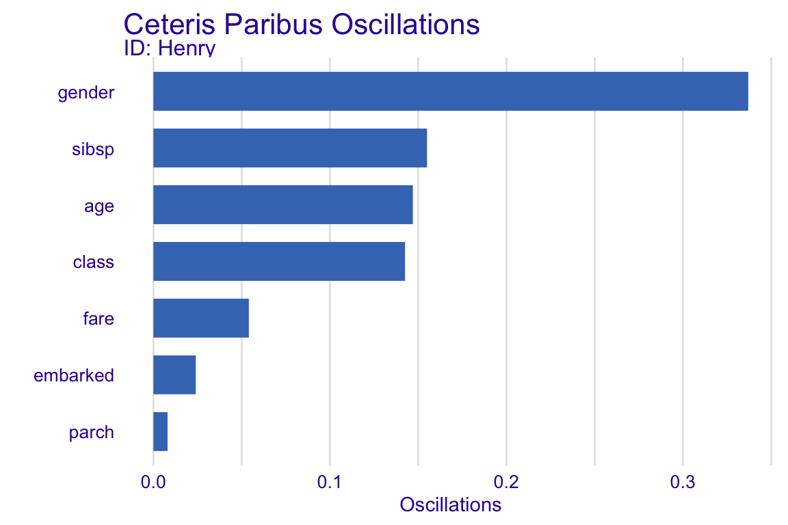
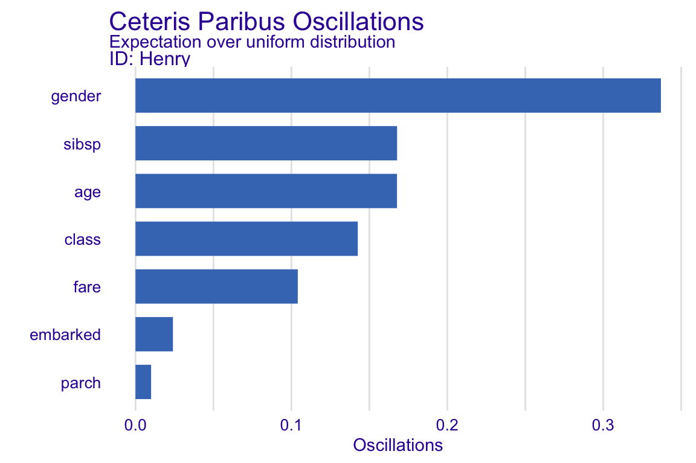
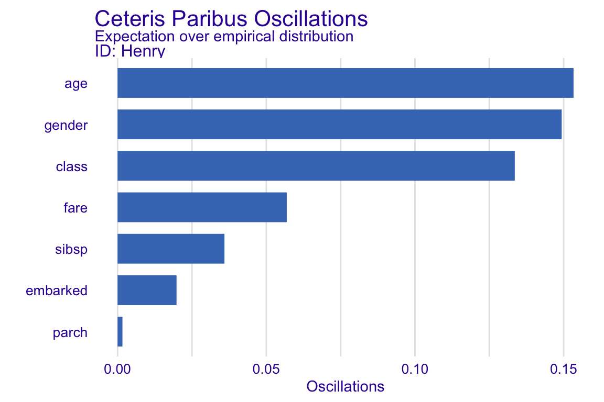

12 Ceteris-paribus Oscillations
12.1 Introduction
Visual examination of Ceteris-paribus (CP) profiles is insightful, but for a model with a large number of explanatory variables we may end up with a large number of plots which may be overwhelming. To prioritize between the profiles we need a measure that would summarize the impact of a selected variable on model’s predictions. In this chapter we describe a solution closely linked with CP profiles. An alternative instance-level variable importance is discussed in the Chapters 7 (Break Down), 9 (SHAP) and 10 (LIME).
12.2 Intuition
To assign importance to CP profiles, we can use the concept of profile oscillations. In particular, the larger influence of an explanatory variable on prediction at a particular instance, the larger the fluctuations along the corresponding CP profile. For a variable that exercises little or no influence on model prediction, the profile will be flat or will barely change. In other words, the values of the CP profile should be close to the value of the model prediction for the particular instance. Consequently, the sum of differences between the profile and the value of the prediction, take across all possible values of the explanatory variable, should be close to zero. The sum can be graphically depicted by the area between the profile and the horizontal line representing the instance prediction. On the other hand, for an explanatory variable with a large influence on the prediction, the area should be large. Figure 12.1 illustrates the concept. Panel A of the Figure corresponds to the CP profiles presented in Figure 11.5. The larger the highlighted area in Figure 12.1, the more important is the variable for the particular prediction.
Figure 12.1: The value of the colored area summarizes the Ceteris-paribus-profile oscillations and provides the mean of the absolute deviations between the CP profile and the instance prediction. Panel A shows plots for continuous explanatory variables, while panel B shows plots for categorical variables in the titanic_rf_v6 model.
12.3 Method
Let us formalize this concept now. Denote by \(g^j(z)\) the probability density function of the distribution of the \(j\)-th explanatory variable. The summary measure of the variable’s importance for model prediction at point \(x_*\), \(vip_{CP}^{j}(x_*)\), computed based on the variable’s CP profile, is defined as follows:
\[\begin{equation} vip_{CP}^j(x_*) = \int_{\mathcal R} |h^{j}_{x_*}(z) - f(x_*)| g^j(z)dz=E_{X^j}\left[|h^{j}_{x_*}(X^j) - f(x_*)|\right]. \tag{12.1} \end{equation}\]
Thus, \(vip_{CP}^j(x_*)\) is the expected absolute deviation of the CP profile from the model prediction for \(x_*\) over the distribution \(g^j(z)\) for the \(j\)-th explanatory variable.
The true distribution of \(j\)-th explanatory variable is, in most cases, unknown. Thus, there are several options how to calculate Equation (12.1).
One is to calculate just the area under the CP curve, i.e., to assume that \(g^j(z)\) is a uniform distribution for the range of variable \(x^j\). It folows then that a straightforward estimator of \(vip_{CP}^{j,uni}(x_*)\) is
\[\begin{equation} \widehat{vip}_{CP}^{j,uni}(x_*) = \frac 1k \sum_{l=1}^k |h^{j}_{x_*}(z_l) - f(x_*)|, \tag{12.2} \end{equation}\]
where \(z_l\) (\(l=1, \ldots, k\)) are the selected values of the \(j\)-th explanatory variable. For instance, one can select use all unique values of \(x^{j}\) in the considered dataset. Alternatively, for a continuous variable, one can use an equidistant grid of values.
Another approach is to use the empirical distribution for \(x^{j}\). This leads to the estimator of \(vip_{CP}^{j,emp}(x_*)\) defined as
\[\begin{equation} \widehat{vip}_{CP}^{j,emp}(x_*) = \frac 1n \sum_{i=1}^n |h^{j}_{x_*}(x^{j}_i) - f(x_*)|, \tag{12.3} \end{equation}\]
where index \(i\) goes through all observations in a dataset.
The use of of \(\widehat{vip}_{CP}^{j,emp}(x_*)\) is preferred when there are enough data to accurately estimate the empirical distribution and when the distribution is not uniform. On the other hand, \(\widehat{vip}_{CP}^{j,uni}(x_*)\) is in most cases quicker to compute and, therefore, it is preferred if we look for fast approximations.
It is worth noting that the importance of an explanatory variable for instance prediction may be very different for different points \(x_*\). For example, consider model \[ f(x_1, x_2) = x_1 * x_2, \] where \(x_1\) and \(x_2\) take values in \([0,1]\). Consider prediction for an observation described by vector \(x_* = (0,1)\). In that case, the importance of \(X_1\) is larger than \(X_2\). This is because the CP profile for the first variable, given by the values of function \(f(z,1)=z\), will have oscillations. On the other hand, the profile for the second variable will show no oscillations, because the profile is given by function \(f(0,z)=0\). Obviously, the situation is reversed for \(x_*=(1,0)\).
12.4 Example: Titanic
Figure 12.2 provides a barplot of variable importance measures for different continuous explanatory variables for the random forest model titanic_rf_v6 for johny_d.
The longer the bar, the larger the CP-profile oscillations for a particular explanatory variable. Thus, Figure 12.2 indicates that the most important variable for prediction for the selected observation are gender and sibsp, followed by age.
From the Ceteris Paribus one can read that if Henry were older, this would significantly lower the chance of survival. One the other hand, were Henry not travelling alone, this would increase the chance.
From the oscillation’s plot one can only read which features are important but one cannot read how they influence the prediction. This is why profile oscillations shall be accompanied by Ceteris Paribus profiles.

Figure 12.2: Variable-importance measures calculated for Ceteris-paribus oscillations for johny_d based on the titanic_rf_v6 model.
12.5 Pros and cons
Oscillations of CP profiles are easy to interpret and understand. By using the average of oscillations, it is possible to select the most important variables for an instance prediction. This method can easily be extended to two or more variables. In such cases one needs to integrate the equation (12.2) over larger number of variables.
There are several issues related to the use of the CP oscillations. For example, the oscillations may not be of help in situations when the use of CP profiles may itself be problematic (e.g., in the case of correlated explanatory variables or interactions - see Section 11.5). An important issue is that the CP based local variable importance do not sum up to the instance prediction for which they are calculated, opposite to Break Down (Chapter 7) and Shapley values (Chapter 9).
12.6 Code snippets for R
In this section, we present key features of R package DALEX which is a part of the DrWhy.AI universe and covers all methods presented in this chapter.
For illustration purposes we use the random forest model titanic_rf_v6 (see Section 5.1.3). Recall that it is developed to predict the probability of survival from sinking of Titanic. Instance-level explanations are calculated for a single observation: henry - a 47-year-old passenger that travelled in the 1st class.
DALEX explainers for both models and the Henry data are retrieved via archivist hooks as listed in Section 5.1.8.
library("randomForest")
explain_rf_v6 <- archivist::aread("pbiecek/models/6ed54")
library("DALEX")
henry <- archivist::aread("pbiecek/models/a6538")
henry12.6.1 Basic use of the variable_attribution function
To calculate CP oscillations, we have got to calculate CP profiles for the selected observation. We use henry as the instance prediction of interest.
CP profiles are calculated by applying the variable_attribution() function to the explainer object to calculate the oscillations and the estimated value of the variable-importance measure as in Equation (12.1).
library("ingredients")
library("ggplot2")
(oscillations_titanic_rf <- variable_attribution(explain_rf_v6,
henry, type = "oscillations"))## _vname_ _ids_ oscillations
## 2 gender 1 0.33700000
## 4 sibsp 1 0.15500000
## 3 age 1 0.14700000
## 1 class 1 0.14257143
## 6 fare 1 0.05407273
## 7 embarked 1 0.02400000
## 5 parch 1 0.00800000Note that, by default, variable_attribution(type = "oscillations") estimates \(vip_{CP}^j(x_*)\) by \(\widehat{vip}_{CP}^{j,uni}(x_*)\), given in (12.2), using all unique values of the explanatory variable as the grid points.
Thevariable_attribution(type = "oscillations") function returns an object of class ceteris_paribus_oscillations, which has a form of a data frame, but has also an overloaded plot() function. We can use the latter function to plot the local variable-importance measures for the instance of interest.
oscillations_titanic_rf$`_ids_` <- "Henry"
plot(oscillations_titanic_rf) + ggtitle("Ceteris Paribus Oscillations")
12.6.2 Advanced use of the variable_attribution function
As mentioned in the previous section, variable_attribution() estimates \(vip_{CP}^j(x_*)\) by \(\widehat{vip}_{CP}^{j,uni}(x_*)\) using all unique values of the explanatory variable as the grid points. However, other approaches are also possible.
One is to use \(\widehat{vip}_{CP}^{j,uni}(x_*)\), but assuming an equi-distant grid of values for a continuous explanatory variable. Toward this aim, we have got to explicitly specify a dense uniform grid of values for such a variable. The variable_splits argument can be used for this purpose.
oscillations_uniform <- variable_attribution(explain_rf_v6, henry,
variable_splits = list(age = seq(0, 65, 0.1),
fare = seq(0, 200, 0.1),
sibsp = seq(0, 8, 0.1),
parch = seq(0, 8, 0.1),
gender = unique(titanic$gender),
embarked = unique(titanic$embarked),
class = unique(titanic$class)),
type = "oscillations")Subsequently, we apply the calculate_oscillations() function to compute the oscillations and the variable-importance measures.
## _vname_ _ids_ oscillations
## 5 gender Henry 0.3370000
## 3 sibsp Henry 0.1677778
## 1 age Henry 0.1677235
## 7 class Henry 0.1425714
## 2 fare Henry 0.1040790
## 6 embarked Henry 0.0240000
## 4 parch Henry 0.0100000plot(oscillations_uniform) +
ggtitle("Ceteris Paribus Oscillations",
"Expectation over uniform distribution")
Another approach is to calculate the expectation (12.1) over the empirical distribution of a variable, i..e, to use \(\widehat{vip}_{CP}^{j,emp}(x_*)\), given in (12.3). Toward this aim, we use the variable_splits argument to explicitly specify the validation-data sample to define the grid of values.
titanic <- na.omit(titanic)
oscillations_empirical <- variable_attribution(explain_rf_v6, henry,
variable_splits = list(age = titanic$age,
fare = titanic$fare,
sibsp = titanic$sibsp,
parch = titanic$parch,
gender = titanic$gender,
embarked = titanic$embarked,
class = titanic$class),
type = "oscillations")## _vname_ _ids_ oscillations
## 1 age Henry 0.153323969
## 5 gender Henry 0.149336656
## 7 class Henry 0.133567739
## 2 fare Henry 0.056883552
## 3 sibsp Henry 0.035932034
## 6 embarked Henry 0.019818758
## 4 parch Henry 0.001623924plot(oscillations_empirical) +
ggtitle("Ceteris Paribus Oscillations",
"Expectation over empirical distribution")